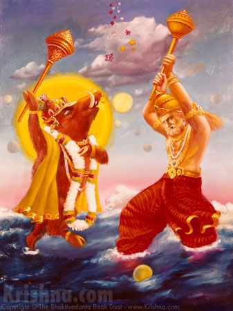

Chapter 2: The Battle Between Lord Boar and the Demon Hiraṇyākṣa
3.18.1 — Maitreya continued: The proud and falsely glorious Daitya paid little heed to the words of Varuṇa. O dear Vidura, he learned from Nārada the whereabouts of the Supreme Personality of Godhead and hurriedly betook himself to the depths of the ocean.
3.18.2 — He saw there the all-powerful Personality of Godhead in His boar incarnation, bearing the earth upward on the ends of His tusks and robbing him of his splendor with His reddish eyes. The demon laughed: Oh, an amphibious beast!
3.18.3 — The demon addressed the Lord: O best of the demigods, dressed in the form of a boar, just hear me. This earth is entrusted to us, the inhabitants of the lower regions, and You cannot take it from my presence and not be hurt by me.
3.18.4 — You rascal, You have been nourished by our enemies to kill us, and You have killed some demons by remaining invisible. O fool, Your power is only mystic, so today I shall enliven my kinsmen by killing You.
3.18.5 — The demon continued: When You fall dead with Your skull smashed by the mace hurled by my arms, the demigods and sages who offer You oblations and sacrifice in devotional service will also automatically cease to exist, like trees without roots.

3.18.6 — Although the Lord was pained by the shaftlike abusive words of the demon, He bore the pain. But seeing that the earth on the ends of His tusks was frightened, He rose out of the water just as an elephant emerges with its female companion when assailed by an alligator.
3.18.7 — The demon, who had golden hair on his head and fearful tusks, gave chase to the Lord while He was rising from the water, even as an alligator would chase an elephant. Roaring like thunder, he said: Are You not ashamed of running away before a challenging adversary? There is nothing reproachable for shameless creatures!
3.18.8 — The Lord placed the earth within His sight on the surface of the water and transferred to her His own energy in the form of the ability to float on the water. While the enemy stood looking on, Brahmā, the creator of the universe, extolled the Lord, and the other demigods rained flowers on Him.
3.18.9 — The demon, who had a wealth of ornaments, bangles and beautiful golden armor on his body, chased the Lord from behind with a great mace. The Lord tolerated his piercing ill words, but in order to reply to him, He expressed His terrible anger.
3.18.10 — The Personality of Godhead said: Indeed, We are creatures of the jungle, and We are searching after hunting dogs like you. One who is freed from the entanglement of death has no fear from the loose talk in which you are indulging, for you are bound up by the laws of death.
3.18.11 — Certainly We have stolen the charge of the inhabitants of Rasātala and have lost all shame. Although bitten by your powerful mace, I shall stay here in the water for some time because, having created enmity with a powerful enemy, I now have no place to go.
3.18.12 — You are supposed to be the commander of many foot soldiers, and now you may take prompt steps to overthrow Us. Give up all your foolish talk and wipe out the cares of your kith and kin by slaying Us. One may be proud, yet he does not deserve a seat in an assembly if he fails to fulfill his promised word.
3.18.13 — Śrī Maitreya said: The demon, being thus challenged by the Personality of Godhead, became angry and agitated, and he trembled in anger like a challenged cobra.
3.18.14 — Hissing indignantly, all his senses shaken by wrath, the demon quickly sprang upon the Lord and dealt Him a blow with his powerful mace.
3.18.15 — The Lord, however, by moving slightly aside, dodged the violent mace-blow aimed at His breast by the enemy, just as an accomplished yogī would elude death.
3.18.16 — The Personality of Godhead now exhibited His anger and rushed to meet the demon, who bit his lip in rage, took up his mace again and began to repeatedly brandish it about.
3.18.17 — Then with His mace the Lord struck the enemy on the right of his brow, but since the demon was expert in fighting, O gentle Vidura, he protected himself by a maneuver of his own mace.
3.18.18 — In this way, the demon Haryakṣa and the Lord, the Personality of Godhead, struck each other with their huge maces, each enraged and seeking his own victory.
3.18.19 — There was keen rivalry between the two combatants; both had sustained injuries on their bodies from the blows of each other’s pointed maces, and each grew more and more enraged at the smell of blood on his person. In their eagerness to win, they performed maneuvers of various kinds, and their contest looked like an encounter between two forceful bulls for the sake of a cow.
3.18.20 — O descendant of Kuru, Brahmā, the most independent demigod of the universe, accompanied by his followers, came to see the terrible fight for the sake of the world between the demon and the Personality of Godhead, who appeared in the form of a boar.
3.18.21 — After arriving at the place of combat, Brahmā, the leader of thousands of sages and transcendentalists, saw the demon, who had attained such unprecedented power that no one could fight with him. Brahmā then addressed Nārāyaṇa, who was assuming the form of a boar for the first time.
3.18.22-23 — Lord Brahmā said: My dear Lord, this demon has proved to be a constant pinprick to the demigods, the brāhmaṇas, the cows and innocent persons who are spotless and always dependent upon worshiping Your lotus feet. He has become a source of fear by unnecessarily harassing them. Since he has attained a boon from me, he has become a demon, always searching for a proper combatant, wandering all over the universe for this infamous purpose.
3.18.24 — Lord Brahmā continued: My dear Lord, there is no need to play with this serpentine demon, who is always very skilled in conjuring tricks and is arrogant, self-sufficient and most wicked.
3.18.25 — Brahmā continued: My dear Lord, You are infallible. Please kill this sinful demon before the demoniac hour arrives and he presents another formidable approach favorable to him. You can kill him by Your internal potency without doubt.
3.18.26 — My Lord, the darkest evening, which covers the world, is fast approaching. Since You are the Soul of all souls, kindly kill him and win victory for the demigods.
3.18.27 — The auspicious period known as abhijit, which is most opportune for victory, commenced at midday and has all but passed; therefore, in the interest of Your friends, please dispose of this formidable foe quickly.
3.18.28 — This demon, luckily for us, has come of his own accord to You, his death ordained by You; therefore, exhibiting Your ways, kill him in the duel and establish the worlds in peace.